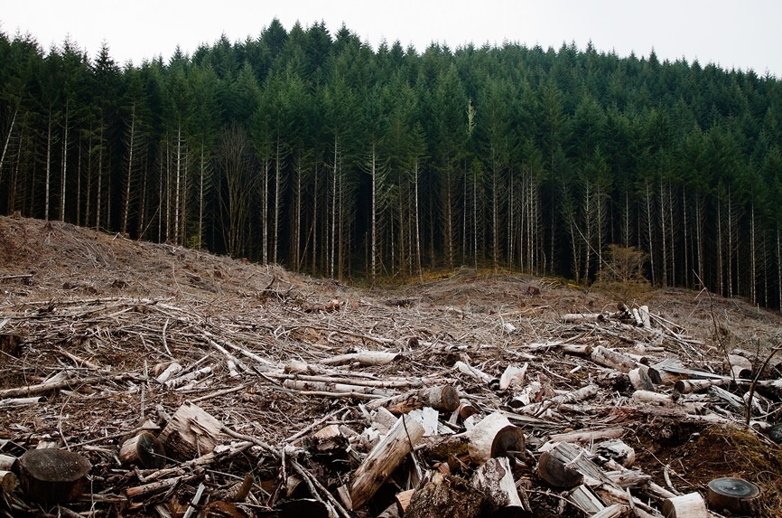
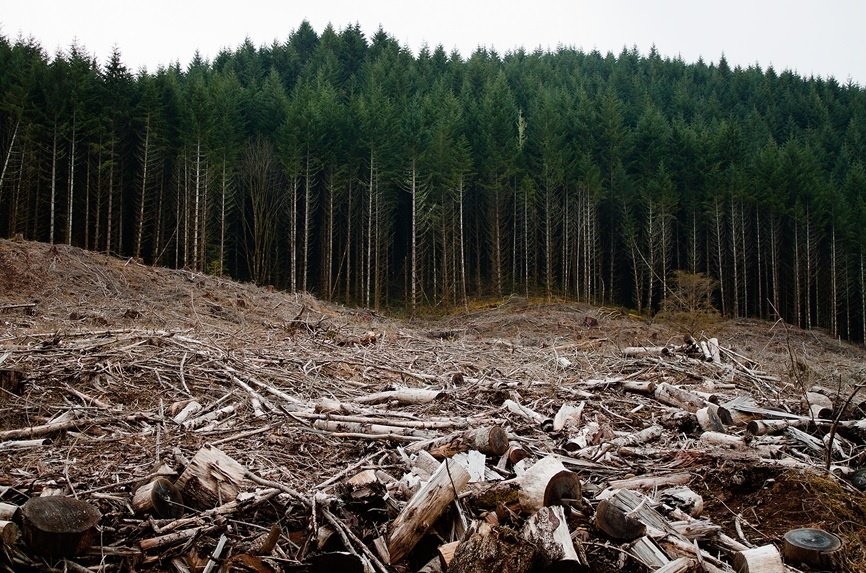

Deforestation
 


What is deforestation?
Deforestation is the clearing and thinning of forests for commercial use. It largely impacts tropical rainforests around the world, and is a large contributor to climate change.
Why is it a problem?
It's a large problem because of its impact on biodiversity and climate change. Many ecosystems rely on trees for biodiversity as it provides shelter, food, and sustenence for species. With two thirds of the earth living in biodiverse tropical rainforests, maintaining biodiversity is crucial to avoid mass extinction of earth's species. Another big issue with deforestation is its affect on climate change. Without forests, the carbon dioxide which is normally processed by the trees is released into the atmosphere, and the build up of greenhouse gases insulates the earth and increases its overall temperature.
Current stats:
- 90% of the dry forests in the Caribbean, Central America, and Brazil have been cleared.
- In total 32 million square km of the earth's land has been deforested.
- It is estimated that within 100 years there will be no rainforests.
- One and a half acres of forest is cut down every second.
Sources:
https://www.thebalance.com/deforestations-economic-impact-4163723https://www.azocleantech.com/article.aspx?ArticleID=470
https://www.livescience.com/27692-deforestation.html
https://explore.proquest.com/elibrary/document/1975812107?accountid=39845
https://www.youtube.com/watch?time_continue=1&v=Ic-J6hcSKa8